Storyboard · Variazioni Inquadrature · Nuovi Parametri Visivi
Sotto l'Asfalto — Originale e Variazioni
Sotto l'asfalto è un mini-storyboard (vedi link sottostante) tratto da un semplice script, in cui due personaggi si preparano per una rapina. L'intento è solo quello di rappresentare una storia in modo coerente dal pdv visivo, ossia mantenere l'identità di volti, corpi e ambienti, usando un framework open source per fare one-shoot tutta la pipeline (vedi link a sezione ComfyUI dei Post). Questa pagina non è una versione modificata dello storyboard, ma un insieme di immagini aggiuntive dello storyboard — aggiunte o sostituite tramite un'utility di ComfyUI (vedi link) che, cambiando alcuni parametri di configurazione della generazione, permette di esplorare la stessa storia da un diverso punto di vista, angolo, obbiettivo o luminosità. Per questo motivo, il rapporto d'aspetto di un'inquadratura può cambiare da una variazione all'altra, adattandosi all'inquadratura che meglio serve il focus di quell'immagine.
SINOSSIIn un freddo e suggestivo parcheggio sotterraneo, John, un veterano dal volto segnato, incontra Elena, un'agente operativo precisa e calcolatrice (stile e abbigliamento techno: ricorda Rooney Mara in Uomini che odiano le donne di David Fincher). Senza scambiarsi nessuna parola danno il via alla loro missione: John svela alla ragazza un arsenale nascosto sotto il cofano di una Mustang d'epoca del 1970. Elena prova un'arma, sale sul lato passeggero e insieme si lanciano in un'entrata ad alta velocità verso la notte cittadina.
PERSONAGGI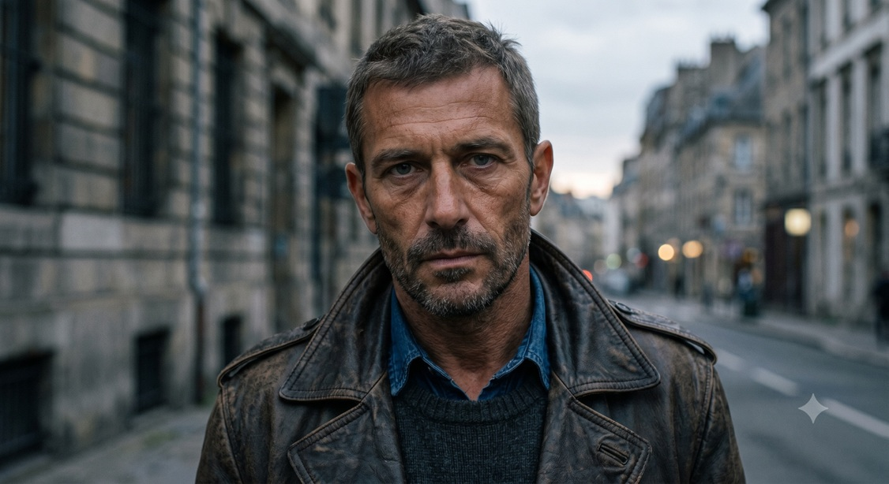
50 anni, volto segnato dall'esperienza, capelli pepe e sale. Giacca di pelle marrone su maglione grigio-verde e camicia sportiva azzurro chiaro. Pantaloni scuri di fustagno. Freddo, deliberato e calmo sotto pressione. Occhi azzurro-verdi, poco in evidenza, circondati da occhiaie segnate e barba da fare.
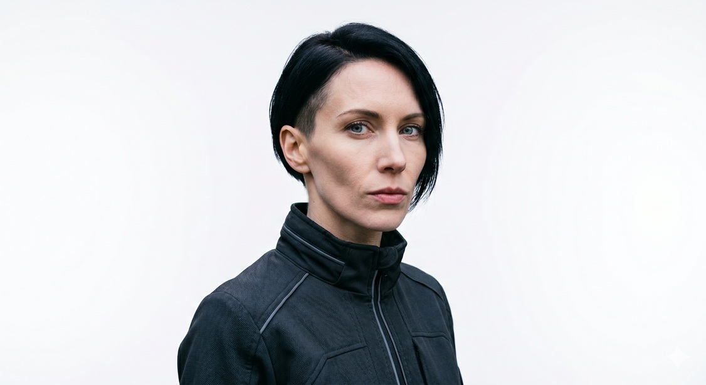
30 anni, tratti affilati, taglio rasato asimmetrico nero (undercut bob). Labbra sottili e naso regolare. Giacca tecnica nera su felpa termica nera. Precisa, attenta, tattica e diretta. Perfetta compagna di lavoro (e forse di vita) di John.
INQUADRATURA 2 — ELENA · GARAGE · PREPARAZIONE
Garage sotterraneo, notte. Elena, pallida, immobile, sguardo fisso davanti a sé. Molto concentrata, tesa per la preparazione della rapina.
VARIAZIONI INQUADRATURA 2
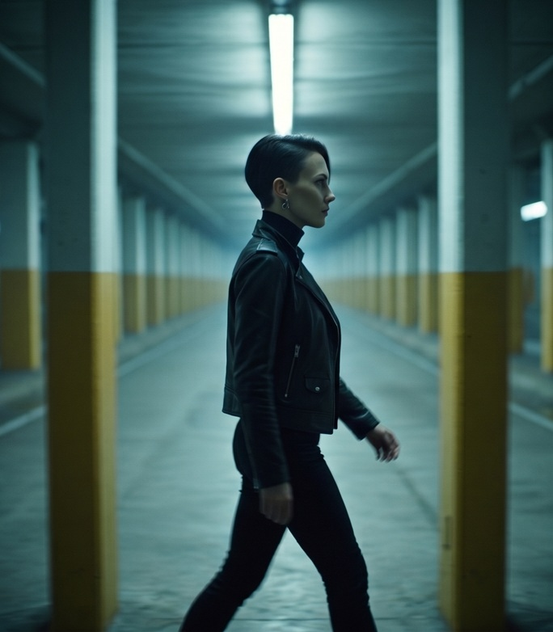
Elena cammina parallela alla camera a media distanza, tra le colonne — ognuna la oscura e rivela brevemente, come un ritmo stroboscopico. Catturata a metà passo, parzialmente illuminata dal fluorescente sopra, parziale ombra. Il profilo del mento e la postura si leggono molto diversamente dal frontale: più predatoria, meno controllata. Il movimento implica agency.
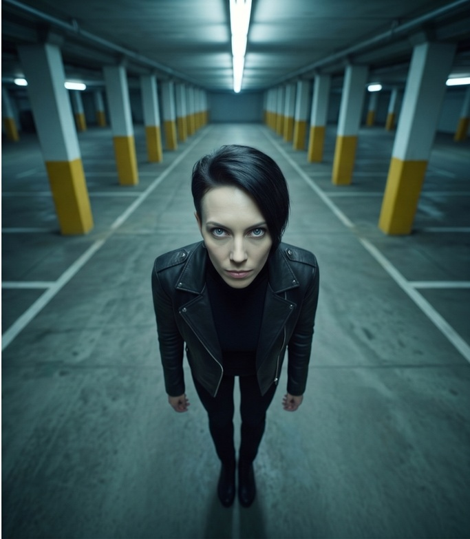
Camera in alto su una colonna, che guarda verso il basso a circa 60–70° dalla verticale. Elena è sotto, leggermente accorciata in prospettiva, la geometria del pavimento del garage visibile attorno a lei. La prospettiva è quella di una telecamera CCTV — ironica per un personaggio che è probabilmente il sorvegliante. Per un fotogramma, è l'osservata piuttosto che l'osservatrice.
INQUADRATURA 4 — JOHN · GARAGE · CHIAVI FORD MUSTANG
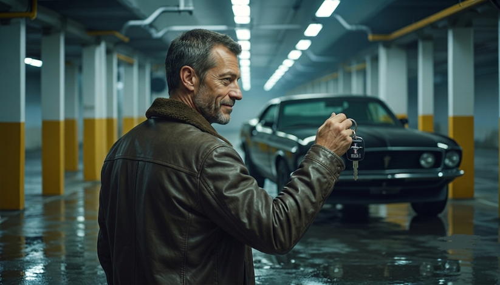
Garage sotterraneo, notte. John è davanti alla sua Ford Mustang nera parcheggiata (male) poco dietro di lui. Sta guardando Elena davanti a lui (fuori campo) e tiene in mano le chiavi dell'auto, con aria compiaciuta. Luce fluorescente fredda da soffitto. Fascio radente proveniente dall'alto che striscia sul cemento del pavimento bagnato.
VARIAZIONI INQUADRATURA 4
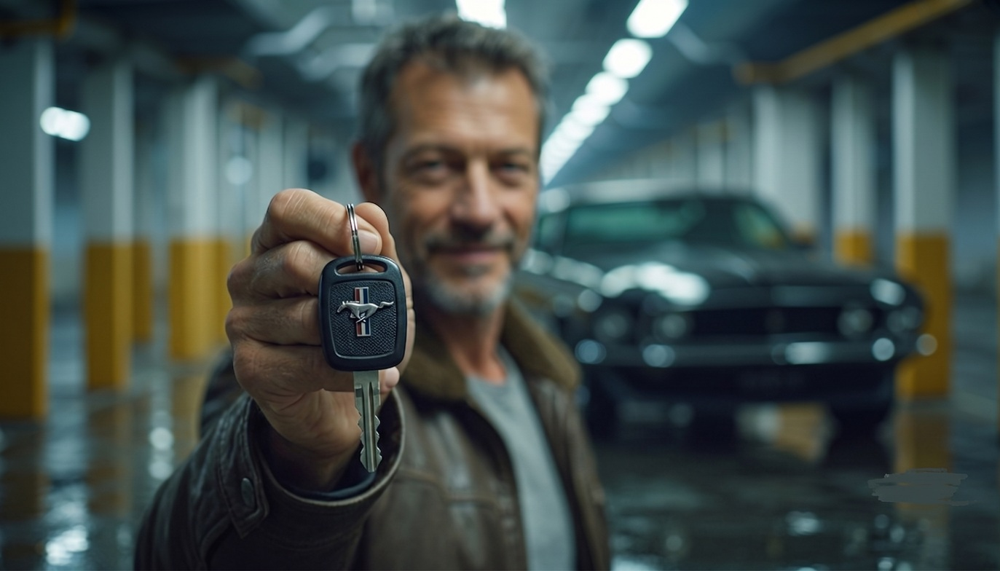
La camera è vicina alla chiave, a fuoco nitido, che riempie un terzo del fotogramma. Il volto di John è visibile sullo sfondo — sfocato ma leggibile, il lieve sorriso distinguibile anche a bassa risoluzione. La gerarchia si inverte: l'oggetto precede la persona. La chiave è catturata nel dettaglio (il logo del pony Mustang conta qui) mentre l'emozione di John è presente ma secondaria. Utile se la chiave ha un peso narrativo oltre questa scena.
Contro-campo: camera all'altezza del cofano della Mustang rivolta verso John. Posizionata bassa davanti all'auto. Il cofano occupa il bordo inferiore del frame. John ci guarda (o quasi in tre quarti), la chiave tra lui e l'obiettivo. L'auto è ora una presenza che inquadra la scena piuttosto che un dettaglio di sfondo — è diventata un partecipante, un'entità che guarda il suo proprietario.
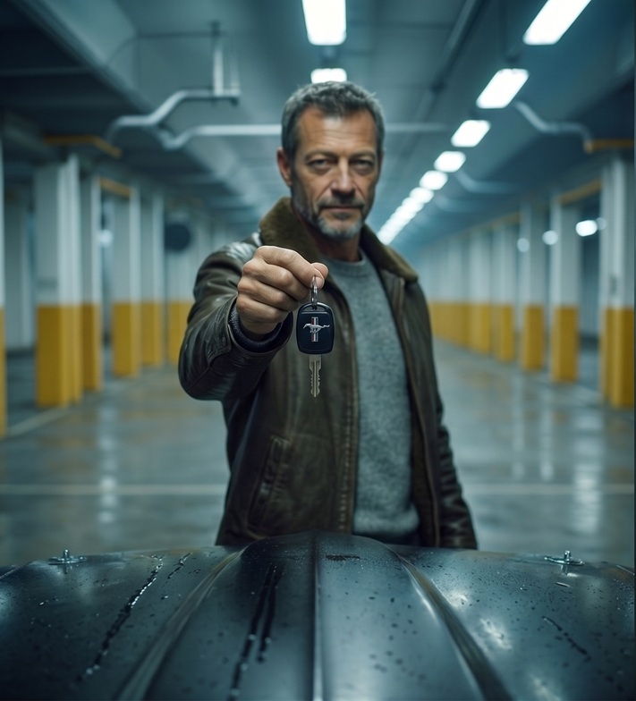
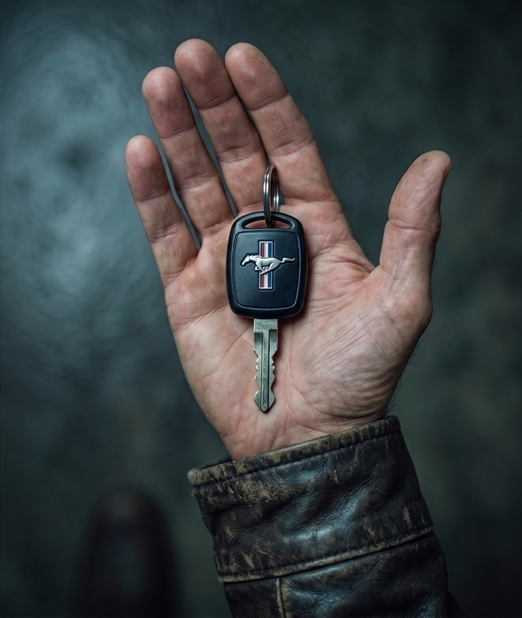
Dettaglio dall'alto: solo mano e chiave. Direttamente sopra o a 45° ripido — solo la mano di John che emerge dal polsino della giacca di pelle con la chiave. Nessun volto, nessuna auto, nessun garage. La chiave diventa una reliquia o un trofeo. È la più simbolica delle tre: riduce il momento al suo oggetto essenziale. Il contrasto tra la pelle consumata e la chiave di metallo è l'intera immagine. Funziona come taglio d'inserto o fotogramma di pausa capitolo.
ANALISI PALETTE
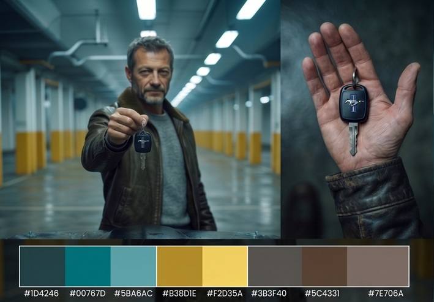
Uno schema complementare di turchese freddo e ambra calda, che crea profondità di campo e una chiara gerarchia visiva. La base fredda è bilanciata dall'ambra, che valorizza la giacca di pelle e il volto dell'uomo. L'accento rosso/blu centrale del portachiavi cattura l'occhio e ancora l'oggetto al centro del frame.
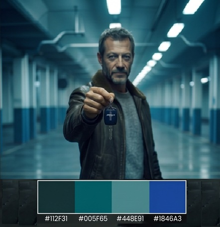
Quattro campioni definiscono una palette fredda monocromatica costruita interamente sull'asse turchese-blu, senza interruzioni calde — insolito per un'immagine generata, dove i modelli diffusion normalmente introducono toni caldi nella pelle e nel cuoio. Il volto e la giacca di John, che negli shot originali portavano marrone e grigio caldo, sono stati raffreddati nella stessa famiglia del turchese. Il personaggio viene assorbito dall'ambiente anziché contrastato con esso.
INQUADRATURA 11 — MUSTANG · RAMPA DI USCITA · SEQUENZA DI FUGA
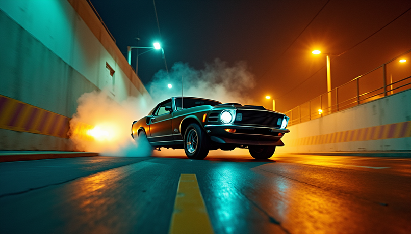
La Mustang esce dalla rampa a piena accelerazione — ruote anteriori leggermente sollevate, pneumatici posteriori che lasciano fumo bianco sull'asfalto. L'auto è intatta, dominante, controllata. La grammatica cromatica è il GARAGE split: turchese freddo sulla parete sinistra, arancio ambra caldo dalle lampade sodiche della città a destra.
VARIAZIONI INQUADRATURA 11
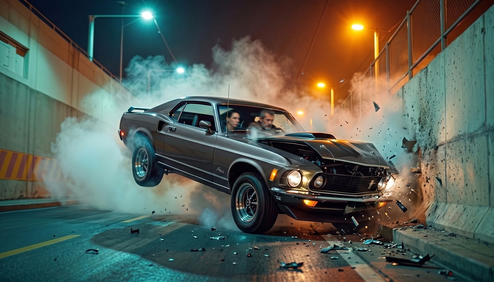
L'impatto è avvenuto o sta avvenendo. Il muso della Mustang ha incontrato la parete destra — detriti e vetro si disperdono radialmente dal punto di contatto, l'angolo anteriore destro è schiacciato, il cofano si deforma. Attraverso il parabrezza crepato sia John che Elena sono visibili come sagome, sfocate dal movimento. Il turchese recede, l'ambra si intensifica da destra, un nuovo tono caldo entra dai detriti dell'impatto. Il campo di detriti è l'evento compositivo. Questo è lo shot di transizione: il controllo che diventa caos.
La Mustang è in volo e capovolta — catturata a circa 120° di rotazione, ruote posteriori in cima, sottoscocca e scarico esposti alla camera. Luci di coda fievolmente accese in rosso, bagagliaio deformato, vetro posteriore scomparso. La parete destra è una superficie di schiacciamento verticale — il tetto vi si comprime contro. Il fumo dello shot 11 riempie ancora il lato sinistro del frame, dando una continuità fantasmatica con il burnout iniziale. I personaggi non sono più visibili. L'auto è diventata un oggetto piuttosto che un veicolo. È un relitto in volo.
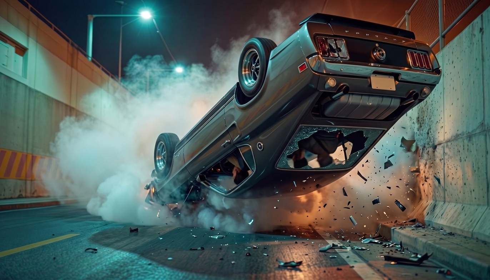
RIDISEGNO COSTUMI — I DUE SI FINGONO CLIENTI PRIVILEGIATI DELLA BANCA
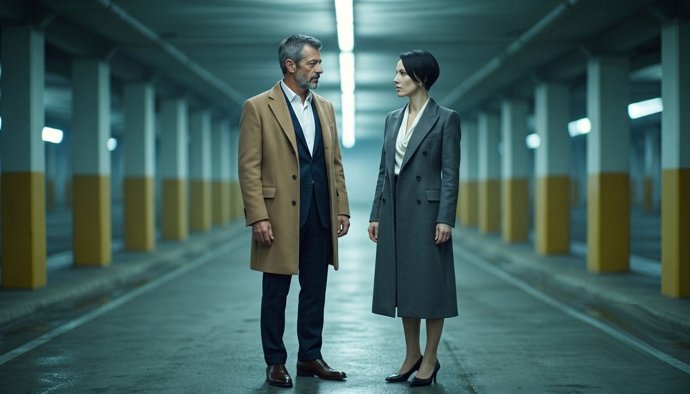
Stile personale Miuccia Prada incrociato con una private banker zurighese. Austero, intellettuale, zero ornamento — ma ogni elemento impeccabile. Un cappotto doppiopetto in cachemire grigio ardesia, lunghezza a metà polpaccio, spalle strutturate, revers puliti, nessun pattern. Sotto: blusa di seta avorio o grigio pallidissimo, colletto minimo, lieve drappeggio al collo — niente abbottonato fino in cima. Décolleté a punta con tacco basso in pelle nera; nessuno stiletto. Il tacco comunica autorità, non seduzione. Il caschetto resta: troppo parte della sua identità. Trucco appena percettibile: pelle perfetta, un labbro neutro, niente che sembri uno sforzo.
industriale dell'Italia del nord di seconda generazione. Un abito antracite in flanella pesante — tessuto Loro Piana, confezione Kiton o Brioni. Monopetto, due bottoni, taglio generoso e sicuro. Portato con una camicia di popeline bianca, senza cravatta, primo bottone aperto: il codice specifico di un uomo abbastanza ricco da non dover segnalare la formalità. Sull'abito, un soprabito di cachemire cammello o tabacco — il rapporto cammello/blu echeggia la giacca di pelle marrone della versione thriller, trasmutato. Il grigio alle tempie legge come autorità. Il pizzetto diventa una corta barba ben curata, abbastanza ordinata da sembrare deliberata.